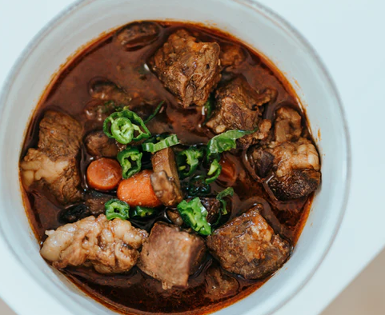

Introduction
Bidos is a traditional stew that derives from Sami culture. It consists of Reindeer or Caribou meat, and is still eaten by Sami peopele across Norway, Sweden, Finland and some other countries.
The Sami people are the indigenous inhabitants of Finland, which is this month's theme. You might know them better as Lapps or Laplanders however. There have been many documentaries about Sami culture and it would be interesting to watch one as you enjoy this dish. Some recurring topics are their frictions with colonizers, their lifestyle and their dealings with racism.
I must say, most documentaries give an instight into the Sami's day-to-day lifestyle. But, if you wish to learn about their cultural struggles in an infotaining way, you could watch the series Midnight Sun. It portrays a realistic interaction between indigenous Sami and less traditional inhabitants of Sweden.
Recipe
- 1 whole onion
- 500 grams caribou/reindeer meat
- 4 Cups water
- 7 potatoes
- 1 1/2 teaspoon of salt
- 1 large carrot
- Extra Garnish of choice

Instructions
- Cut potatoes, meat, onion and carrots into bitesize chunks.
- Cook the onion and meat in a large pan for 5-10 minutes on medium heat.
- Add the water and let it simmer.
- Add the other ingredients after half an hour, and let it simmer for another half hour.
- Enjoy.
Further discovery
A trailer of Midnight Sun